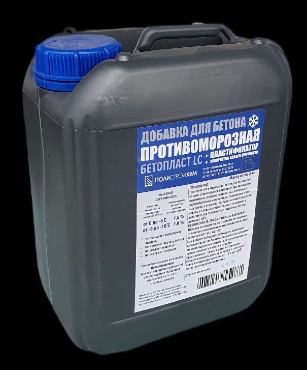

|  | ДОБАВКА НА ОСНОВЕ ПОЛИКАРБОКСИЛАТОВ ПЛАСТИФИКАТОР І ГРУППЫ, УСКОРИТЕЛЬ ТВЕРДЕНИЯ, ПРОТИВОМОРОЗНАЯ II ГРУППЫ Применяется в производстве тяжелого и легкого бетона, строительных растворов, при возведении монолитных и сборно монолитных бетонных и железобетонных Конструкций, сооружений, наливных полов, в условиях заводов, на кассетных установках, а также на строительных площадках и полигонах при температуре окружающей среды до минус 10°C Производится в жидком виде по ТУ 191604636.004-2013. БЕЗОПАСНОСТЬ ТРУДА И ОХРАНА ЗДОРОВЬЯ Добавка по воздействию на организм человека относится к малоопасным веществам (IVкл. опасности по ГОСТ 12.1.007-86). При работе необходимо соблюдать санитарно гигиенические требования, пользоваться средствами индивидуальной защиты для предотвращения прямого контакта кожей и глазами. ПРИ РАБОТЕ С ДОБАВКОЙ НЕЛЬЗЯ ПИТЬ, ПРИНИМАТЬ ПИЩУ, КУРИТЬ. Срок хранения - 12 мес. со дня изготовления. Следует защищать добавку от прямого солнечного света. нагрева свыше 50°С и от замерзання |
Добавка БЕТОПЛАСТ LC используется для производства всех видов бетонов на основе портландцемента: Самоуплотняющихся бетонов, сборных железобетонных изделий и конструкций, монолитных бетонных конструкций, промышленных полов. Добавка может использовать при отрицательных температурах до минимальной среднесуточной минус 10 °С в соответствии с ТКП 45-,03 21-2006 и пособие П1 к СНиП 3.09.01 с обязательным уходом за бетоном. Добавка БЕТОПЛАСТ LC не повышает содержание воздуха в свежеприготовленной смеси, не изменяет окраску бетона и не создает выцветов на поверхности бетона. Добавка не содержит хлоридов и может использоваться в армированных и предварительно напряженных конструкциях. ДОЗИРОВАНИЕ ДОБАВКИ Рекомендуемая дозировка добавки составляет 1,0-2,0% от массы цемента (в жидком виде). Дозировка зависит от состава (класса) бетона, требуемой подвижности и цели применения. При использовании добавки в качестве пластификатора (ускорителя набора прочности) рекомендуемая дозировка составляет 1,2 - 1,6% от массы цемента. При использовании добавки в качестве противоморозной добавки рекомендуемые дозировки составляют: Расчетная Дозировка добавки, литр/100кг цемента Дозировка может варьироваться в зависимости от расхода цемента, водоцементного отношения. Условий выдерживания и твердения бетона. минимальная температура твердения бетона При использовании данной добавки рекомендуется снижать количество воды затворения за счет применения пластификатора I группы. 1,5 - -5°С 0 1,9 -5-10°С ДЕЙСТВИЕ ДОБАВКИ НАИБОЛЕЕ ЭФФЕКТИВНО ПРИ ВВЕДЕНИИ EE СОВМЕСТНО С ВОДОЙ
| ПОСТАВЛЯЕТСЯ В 5, 10, 20, 200, 1000 Литровых канистрах |
Цены на 5 литровые канистры без НДС: 7,0 р. при покупке от 25 кан. 6,5 р. при покупке от 100 кан. |